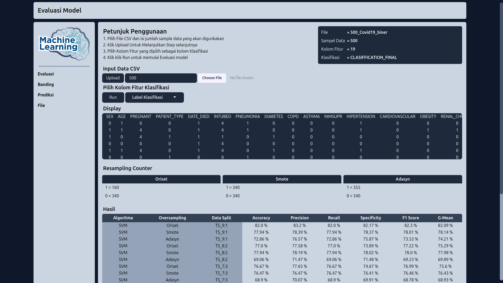

Balik
ML Resampling Data
Proyek ini bertujuan untuk Mengetahui perbandingan kinerja klasifikasi metode resampling SMOTE dan ADASYN dalam mengatasi data imbalence dengan algoritma klasifikasi Support Vector Mechine, Neural Network, Random Forest.
Fitur
- Model Evaluasi
- Banding Evaluasi
- Prediksi
Teknologi yang digunakan:
- Flask (Python)
- TailwindCSS (CSS Framework)
Hasil Akhir
Akhirnya, proyek ini berhasil diselesaikan dengan fitur-fitur yang berfungsi dengan baik dan digunakan oleh banyak pengguna.
Gambar Project
Evaluasi Data  Banding Evaluasi Prediksi Kembali ke Halaman Utama
Kembali ke Halaman Utama